The following Monday we started our two weeks of new teacher orientation / training. It’s so neat being in an international school because the teachers (and other staff) are this wild collection of eclectic humans from all around the world put into one building.
Our first two days of training were rather chill and actually included zero training.
Day one the English speaking school principal (Steve) met all the new teachers at Starbucks where we had an informal meet and greet with overpriced drinks and muffins. Here are the people we met day one:
Kay - A doctor from Lagos, Nigeria who has been in China for 7 years. He’s a chemist.
Kepler and Dorine - A married couple from the African country of Burundi. They are the sweetest two humans, so kind and so caring.
Stuart - he's from the UK and has an 11 year old daughter here with him. His wife is also working at the school doing admin work and teaching English classes.
Miguel - Él es de España and teaches Spanish. His story is so neat because he just started practicing English 11 years ago and is now teaching in China, something he never thought he would do. Miguel has been helping Scott with his Spanish every time they are together.
Milos and Helen - They are a married couple from Serbia. We hit it off with this couple right away. Milos is very active, so many bike and hiking trips were planned instantly. It took Scott a bit too long to remember “Serbia” is not Siberia, haha. Thankfully Milos corrected Scott until he got it down.
Giacomo - He’s from Milan, Italy and is the new music teacher at the school. He’s a bit shy but it seems he is warming up to us, especially because Marissa is always trying to practice her Italian with Giacomo.
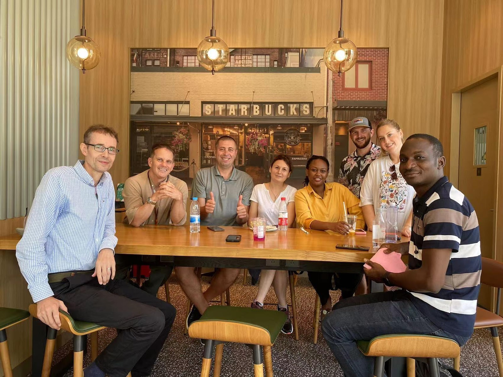
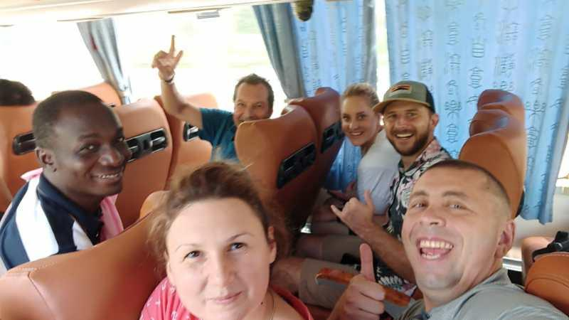
After our meet and greet, the new teacher group met for a bus ride to downtown Shenzhen. The school arranged to take the new teachers to Ikea and Decathlon (a sports store like Dick’s sporting goods) to get items they need for their apartments.
Marissa and I bought a set of matching bicycles at Decathlon, some sports clothing (because cotton is just too hot for this place), and a few bike accessories. We originally wanted second hand bikes, but it was difficult to navigate where to find used bikes AND these bikes were only $120 USD (each), so it wasn't bad. Not to mention they are high quality and hybrid, so they move quickly.
Most of the second hand bikes we saw locally were mountain bikes. We frequently bike faster than the locals ride their scooters.
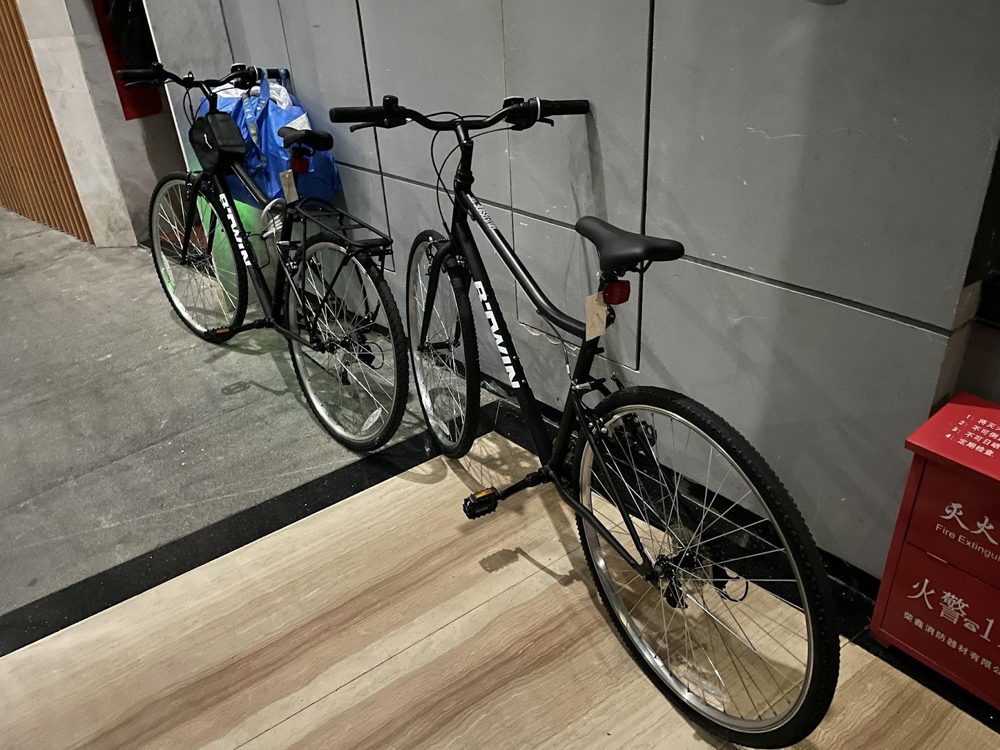
At Ikea we purchased some home goods— little plastic shelves, bath mats, spatula, etc. What’s funny is everyone here pronounced Ikea using the latin alphabet, saying “E-Kay-A” so Marissa and I got made fun of a bit.
Ikea had a ton of stuff but it was expensive compared to the local stores (we are in China after all), so we only bought things we hadn't found in the local stores, including ice trays.
The Chinese, and I'm sure most of Asia, drink their water hot. I'm not joking when I say this, the filtered water machines in our school put out water in two temperatures: 110 degrees water and 220 degrees water (essentially boiling). The machines actually warm the water up for you.
So, ice cubes aren't a popular item here, but being American, we gotta have ice in everything, right?
Day two of orientation was also very chill. We met early at the school for an unstructured FAQ session where our leaders let us ask tons of questions. The questions were mainly around non school related items such as buying e-scooters (most all scooters and bikes here are battery powered), where to shop for different items, how to use public transport, etc.
It’s been funny to see many teachers have answers that directly contradict another teachers. Scott asked “are we allowed to drive electric scooters here in town?”
One teacher said, “I have an e-scooter and love it, i've had no problems” while the teacher sitting next to him/her will say “no, they are illegal to foreigners and you should not ride one”
This was just the start to Scott’s realization of the contradiction saga within education.
Should Scott have a seating chart for the kids?
One teacher says, “Yes, 100% percent, you must set the tone. This is your area of control.”
The second teacher answers, “no, I give my students autonomy and respect.I will not make a seating chart unless they are misbehaving”
Well shoot!
Guess I'll have my kids stand up then.
Anyway, after our FAQ session, all the new teachers met for lunch at an Italian restaurant. From there we were shuttled to the Dapeng fortress, which was a small village built in 1346 by soldiers defending the area from Japanese pirates. It was special to see such old buildings with so much history to them. It’s wild to think how old this country is compared to the USA.
The old buildings were cool, but Dapeng Fortress was a bit of a tourist trap though. Many street vendors and tourist shops.
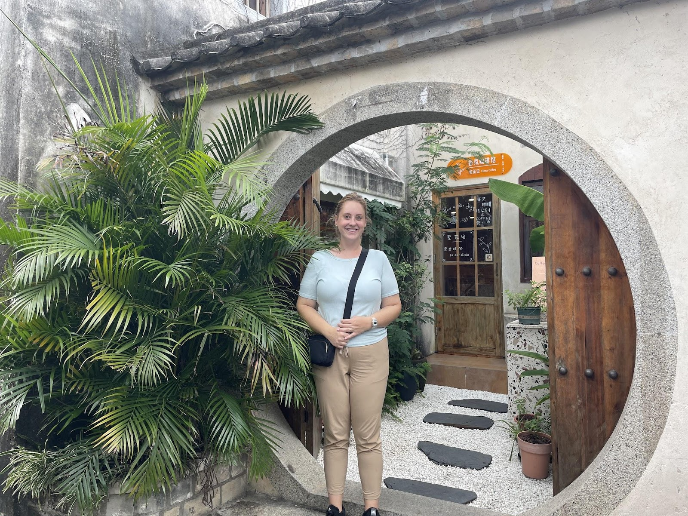
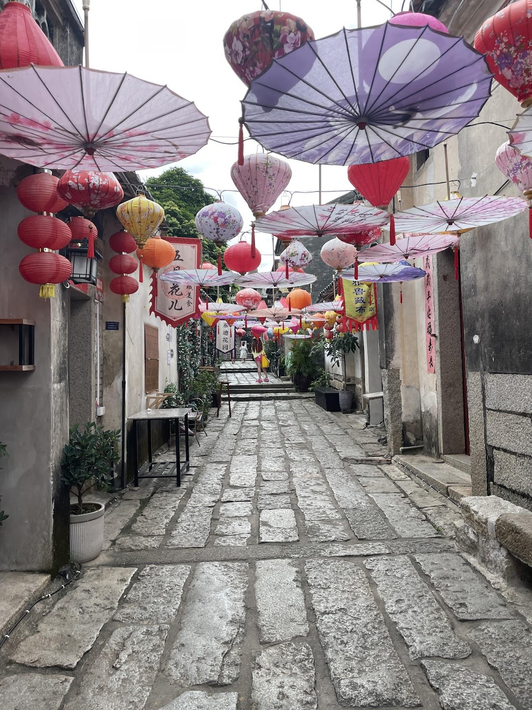
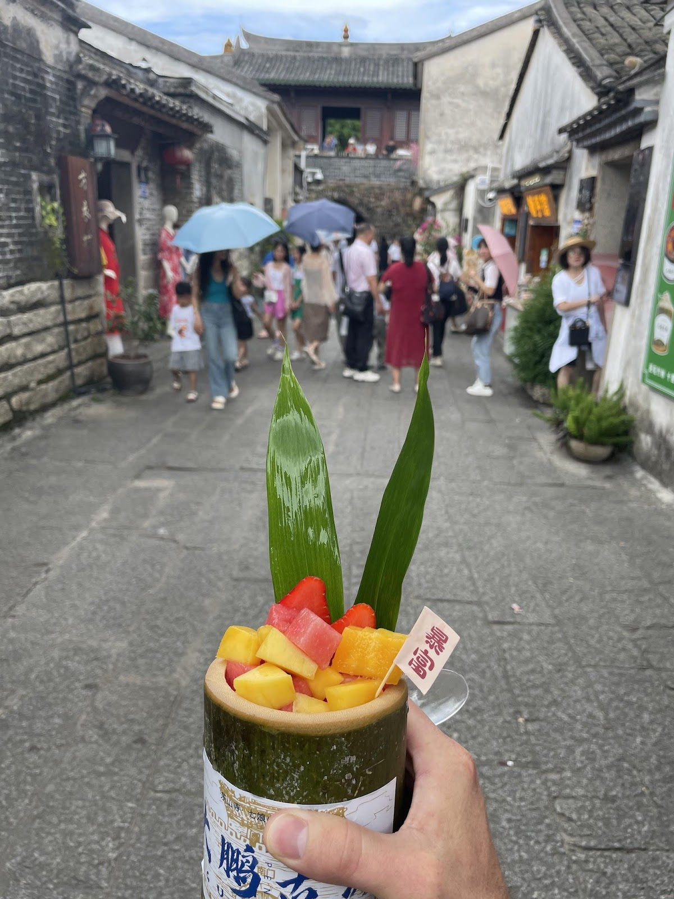
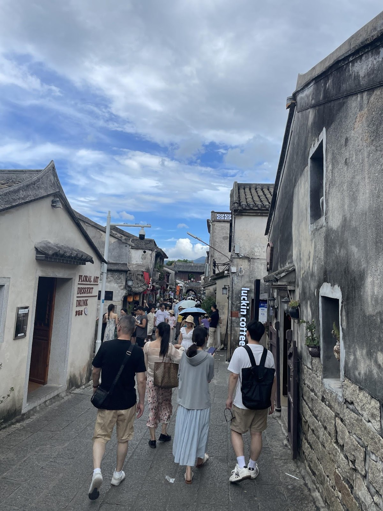
A huge takeaway from these first two “training” days, which the school does on purpose, is they strategically placed teachers together in a fun environment before they arrive to work.
Marissa and I were able to build friendships with our co-workers prior to being in a work setting. This gave us the opportunity to talk about many non-work related things and create memories together that were fun and outside of work. Not to mention we had 2 entire days to spend together, a total of around 20 hours together. This would take years to get in small doses like happy hours and stuff. And now that we are working, these guys aren't just coworkers we know a bit about, they are friends, as you’ll see in some photos below.
And now…onto our School.
Our School is named “RDF International school.” RDF stands for Responsibility, Discipline, and Fortitude. It's an international school, meaning students are here from all over the globe. We teach grades 7-12 and it follows a traditional USA high school format. It’s also a boarding school, which means the students arrive here each Sunday (if they chose to go home over the weekend) and sleep on campus all week. Just think Harry potter and the kids taking the hogwarts express train to school. Except it's a Chinese metro or bus, haha.
With that being said, all of the students are in affluent families. The cost for one year here is equal to one year at Harvard University (without any financial aid).
About $70k per student, per year.
If you copy and paste these coordinates into Google maps, you will see our school! Make sure to turn satellite mode on.
22.585670, 114.475890
Here are some random photos of our school:
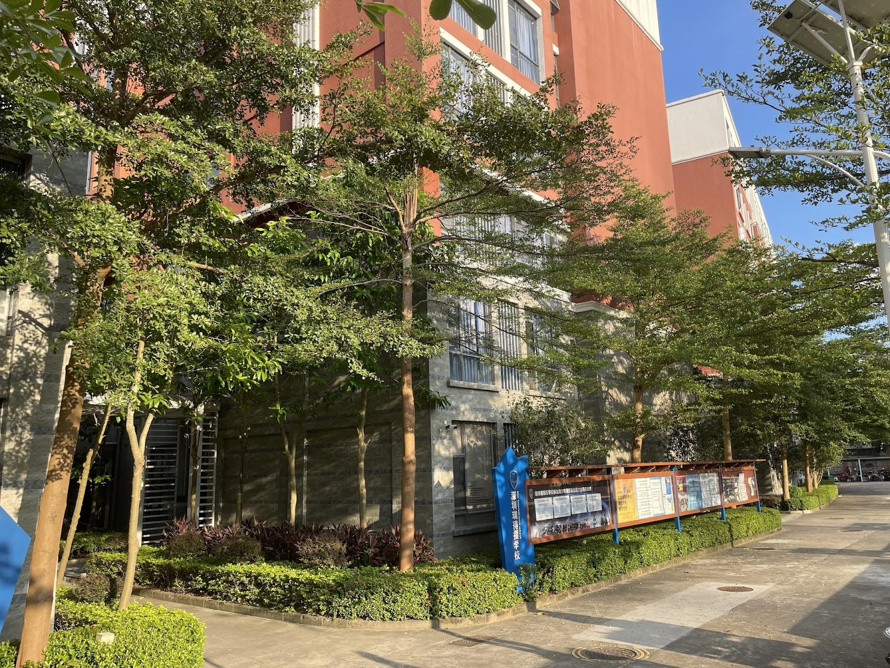
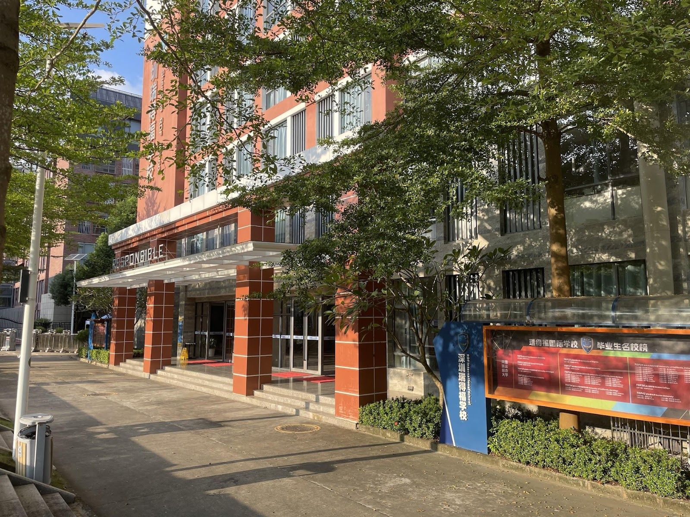
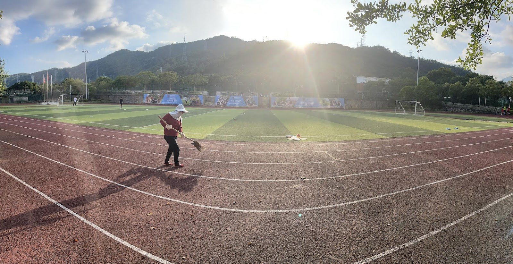
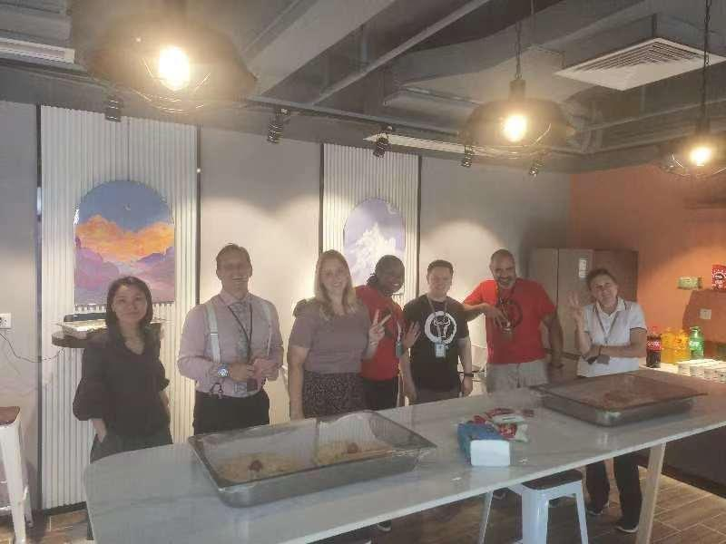
Day three of our orientation was the start of our formal training. It was very relaxed but also very well organized. Lots of clerical stuff mixed with some expectations. All the new teachers met the returning teachers as we sat in the school’s auditorium.
And then lunch!
Come to find out, we get free lunch at the school everyday and in our opinion, the food is great. Presentation is cafeteria style, but if these items were in a few nice bowls, you wouldn't know it was school food! And by free lunch everyday, we mean every single school day for the entire year.
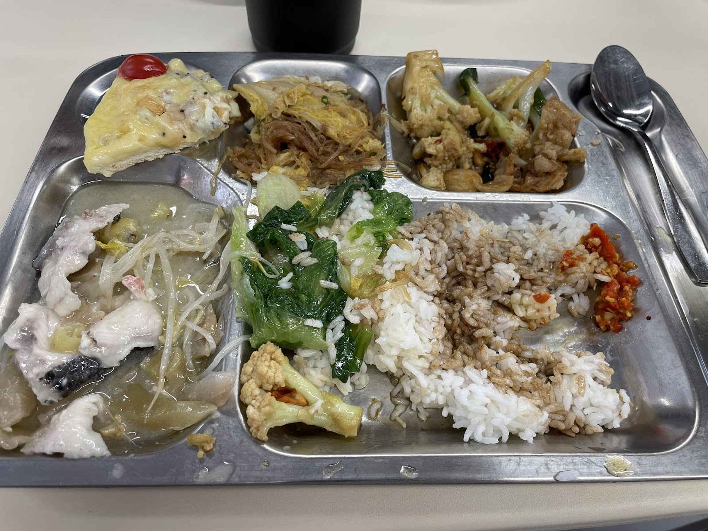
After lunch during our training weeks, us teachers were given free time to plan our lessons, get our rooms setup, decorate, get settled, etc.
The school had a major construction project during the summer and, like all construction projects, went past the deadline. So our classrooms were not quite ready until the last 2 days of training.
Here’s a breakdown of the essential training items we covered in our two week program:
-Student awareness and wellness
-Child protection policies
-Pacing and AP classes (which marissa is teaching one)
-Rules/polices
-Using AI for teachers (using ChatGPT to create your work)
-House system (yes, it's just like harry potter. Except the houses are sharks (Scott), Foxes (Marissa), Bulls, and Leopard)
-Rubrics and grading
-the school grading software
-Police stuff
-Other stuff
-Stuff
-Health insurance stuff
-departments, their head, and budgets
-creating goals (aka how to stay afloat)
-Special school days (kaleidoscope, field day, open day, moon ceremony, etc)
-Attendance and leave for teachers and students
The school is well organized and has us completing weekly surveys, both for us teachers and to give students.
At the end of the two week orientation, the school help an opening day where all students, staff, and teachers were on the campus at once. I don't think parents were there.
Here are some photos from our Opening Day event:
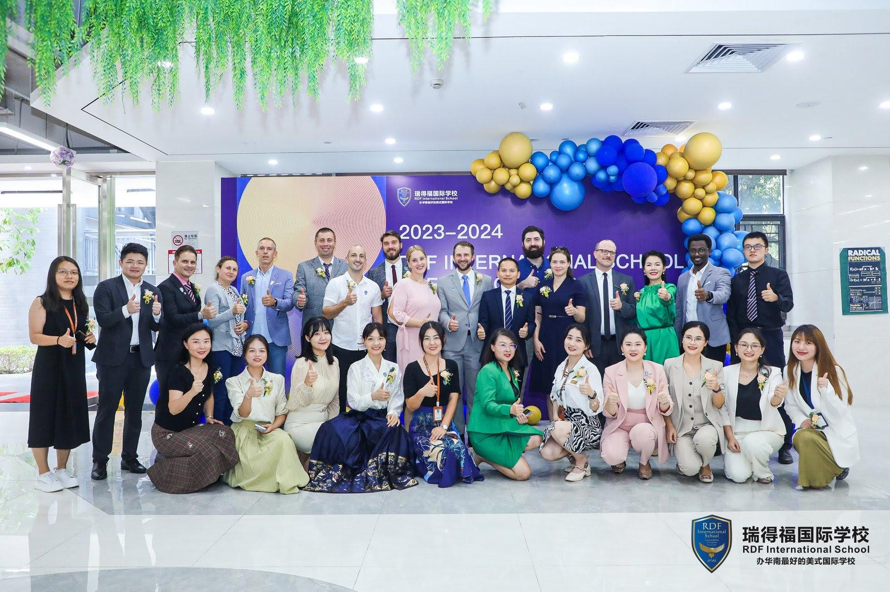
Below, from left to right: Steve (our english speaking principle), Louie (our Chinese speaking principle), Marissa, Scott, Mona (the owner of our school)
Below, from left to right: Stephanie (best drama teacher ever), Marcus (hired escort of Stephanie)
During opening day, the school had each teacher on stage and step out to say where they are from and what subjects they are teaching. Here is Marissa doing so:
And Marcus:
Below is a photo of all the teachers and admins:
Apparently Chinese love their thumbs.
As we write this, it's been about one month of classes. The hardest part for us, so far (in the classroom), has been the surprise of lower level English speakers mixed with high level English speaking students in the same classes.
It’s been very challenging for Marissa and I to teach and half the kids cannot understand what they are being told.
To adapt we are pivoting and using LOTS more learning games but also translating our powerpoint presentations and handouts. We are also learning a few Chinese words, like homework. The kids laugh out loud at our attempt to speak Chinese, it's great. But really lightens the mood because they too are nervous to speak a new language.
But the best part of our classes is how well mannered and behaved the kids are. They respect their teachers so much and it makes teaching middle school much easier. They might not all participate but they arent very disruptive
Here’s a photo of Scott’s classroom. He is teaching Geography to grade 7 and grade 8.
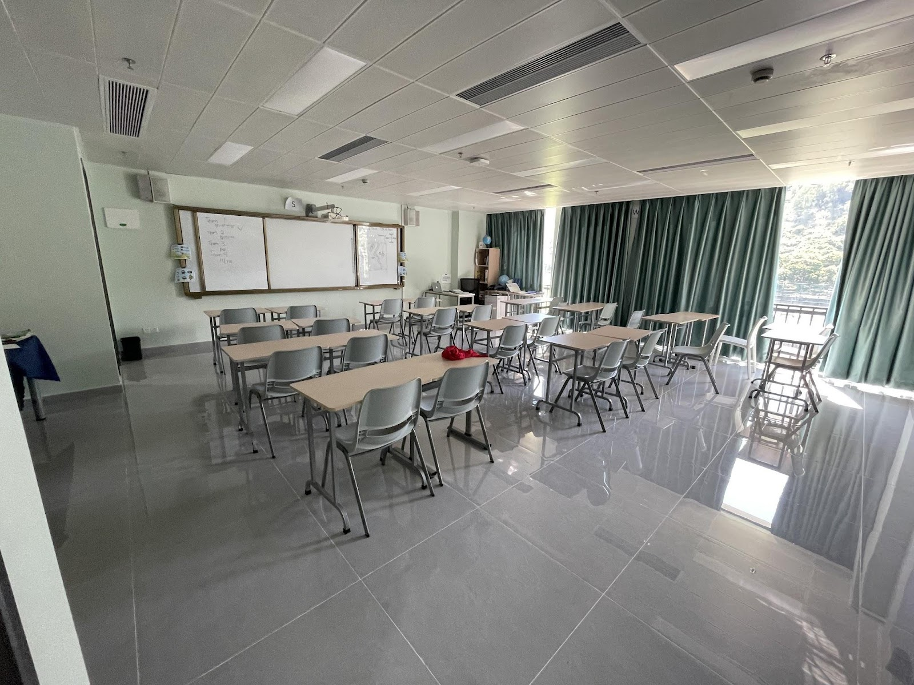
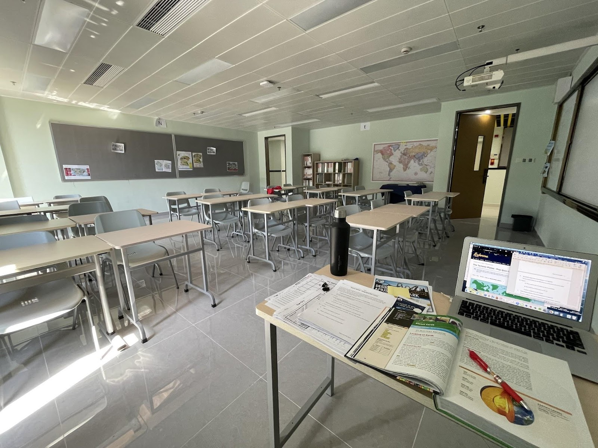
Marissa is teaching AP art history (which has 1 student in the class) and drama. She teaches drama to middle school and high school.
She has not submitted classroom photos yet.
Once school started, Marissa and I were all consumed with staying afloat keeping our teaching lessons ready for the next day, so we haven't found much free time to finish this post! But here we are.
In this first month, outside of school, we did a few local hikes and visited the local beaches. It's hilarious because they put ropes out at the beach to contain both the swimmers and kayaks. I felt like a goldfish in a fish tank:
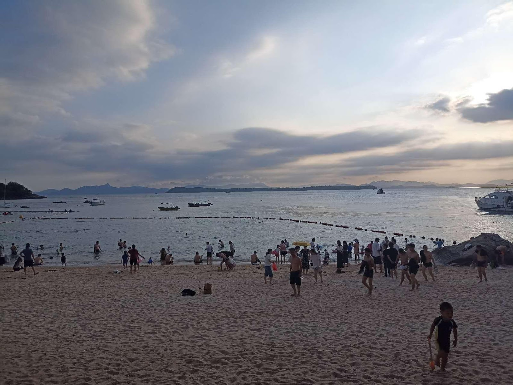
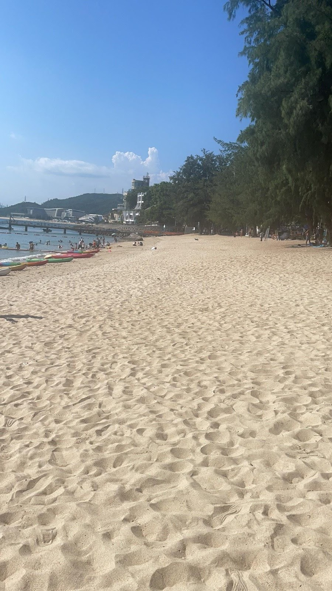
Below are our new friends from Serbia, Milos and Goran:
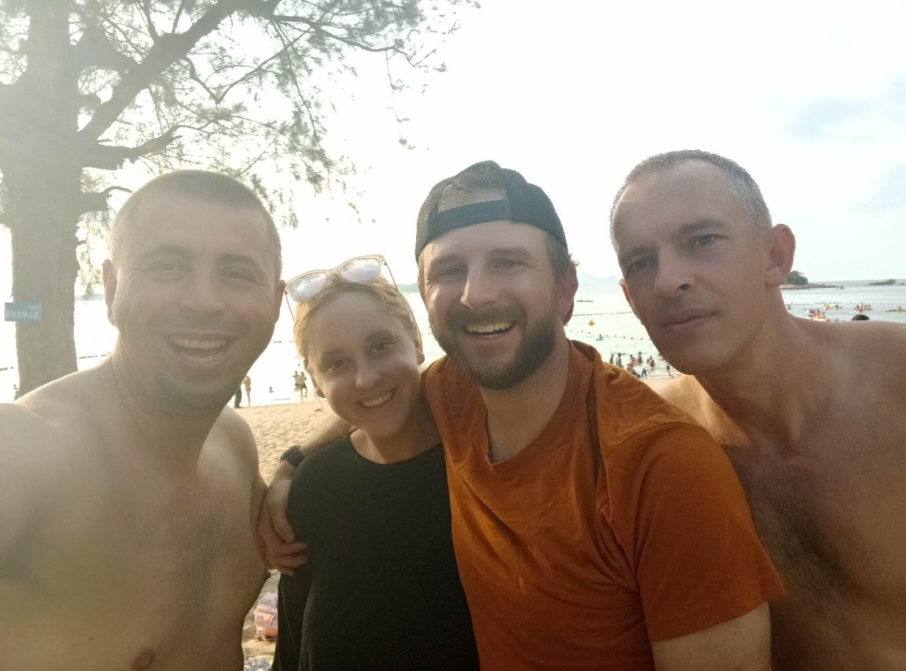
Right behind our apartment is a mountain. Hiking up the mountain are these massive Golden Orb spiders, but the view from the top is worth it:
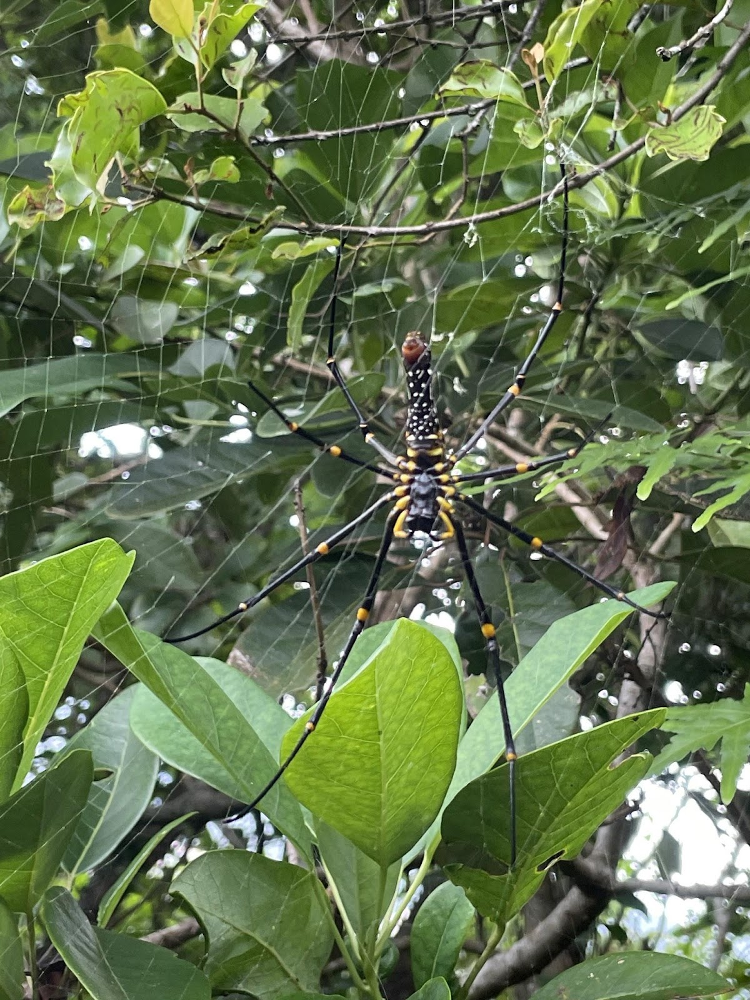
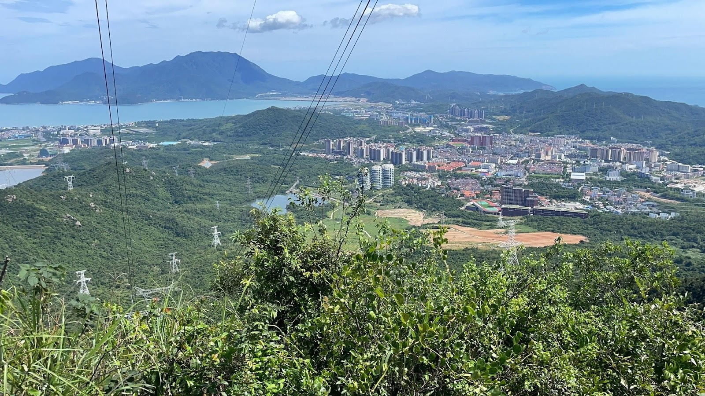
Wednesday Sept 27th our school also held a mid-autumn festival. The Mid-Autumn festival (also called Moon Festival) is a Chinese holiday that is similar to our Halloween, except the costumes are of traditional Chinese dynasty outfits. The holiday is based on the legend of Chang’e, the moon goddess in Chinese mythology.
Marissa and I dressed in Chinese outfits. Although cute, we weren't dressed as fancy as most of the students and teachers because their outfits were from a much older time period than ours.
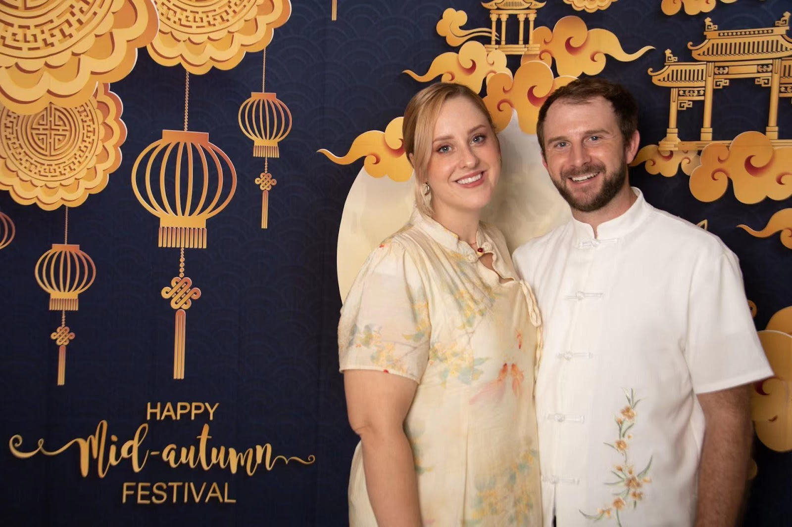
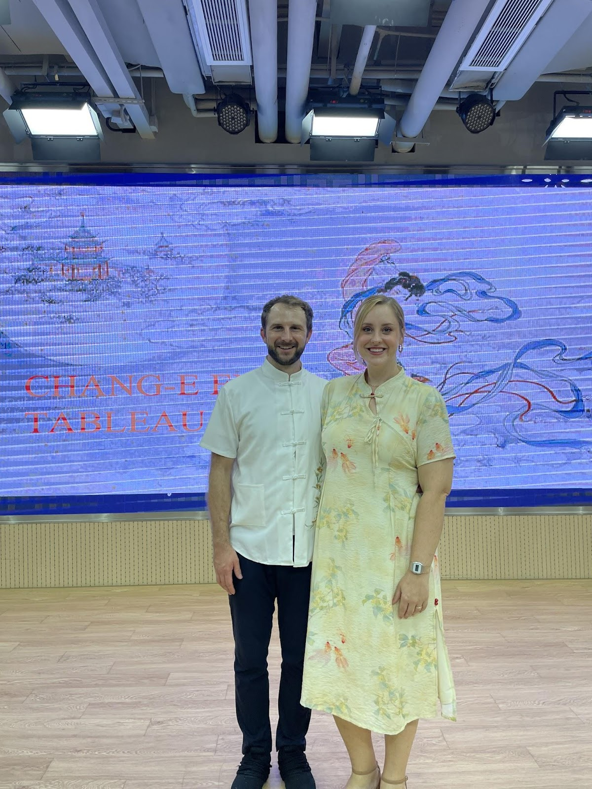
During the Mid-Autumn festival, Marissa also held a drama presentation. She had volunteer students and teachers perform “Tableau” which is freeze frame acting. She told the historic story behind the moon festival and had groups come up with poses for their section of the story. Below you see George acting as an enemy (on the right) and Kim with her son under distress. This is their attempt to explain the story in a freeze frame.
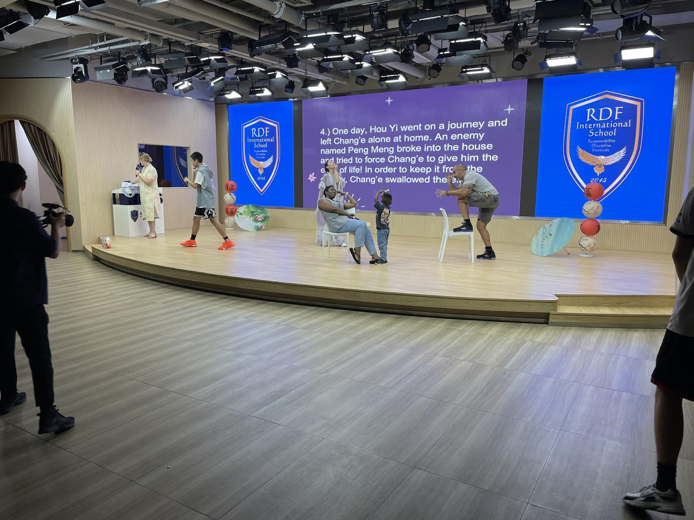
And thats it for this post!
In our next post we will write a little about a typical work day for us, our trip to Shanghai, Beijing, and our camping trip to the Great Wall of China!
Love you guys.